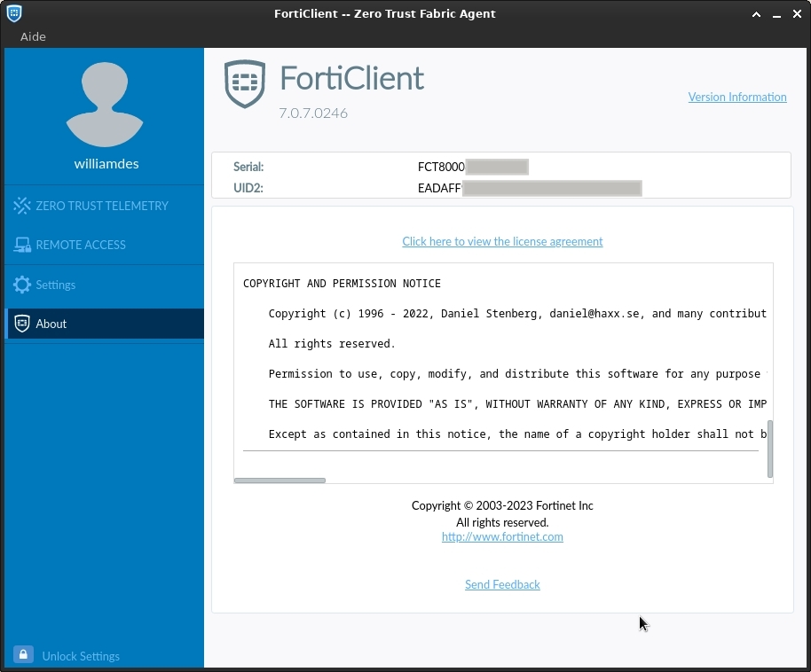

Install fortinet client on Debian 12 - Bookworm/Trixie
This is how to setup fortinet on Debian 12/13 - Bookworm/Trixie.
Their webpage is outdated and broken, here is my updated tutorial.
Install
Fetch the GPG key
curl -fsSL https://repo.fortinet.com/repo/7.0/ubuntu/DEB-GPG-KEY | sudo gpg --dearmor -o /etc/apt/trusted.gpg.d/fortinet.gpgAdd sources file
Debian 12 "Bookworm"
Create a file at /etc/apt/sources.list.d/fortinet.list and put the following contents:
deb [signed-by=/etc/apt/trusted.gpg.d/fortinet.gpg] https://repo.fortinet.com/repo/7.0/ubuntu bionic multiverseDebian 13 "Trixie"
Create a file at /etc/apt/sources.list.d/fortinet.sources and put the following contents:
Types: deb
URIs: https://repo.fortinet.com/repo/7.0/ubuntu/
Suites: bionic
Components: multiverse
Signed-By: /etc/apt/trusted.gpg.d/fortinet.gpgInstall it
Debian 12 "Bookworm"
sudo apt update
sudo apt install forticlientDebian 13 "Trixie"
# Download missing libraries
wget http://ftp.debian.org/debian/pool/main/g/gconf/gconf2-common_3.2.6-8_all.deb
wget http://ftp.debian.org/debian/pool/main/g/gconf/libgconf-2-4_3.2.6-8_amd64.deb
wget http://ftp.debian.org/debian/pool/main/liba/libayatana-appindicator/libayatana-appindicator1_0.5.92-1_amd64.deb
wget http://ftp.debian.org/debian/pool/main/liba/libayatana-indicator/libayatana-indicator7_0.9.3-1_amd64.deb
wget http://ftp.debian.org/debian/pool/main/libd/libdbusmenu/libdbusmenu-gtk4_18.10.20180917~bzr492+repack1-3_amd64.deb
# Install
sudo apt install ./libayatana-appindicator1_0.5.92-1_amd64.deb ./libayatana-indicator7_0.9.3-1_amd64.deb ./libdbusmenu-gtk4_18.10.20180917~bzr492+repack1-3_amd64.deb ./libgconf-2-4_3.2.6-8_amd64.deb ./gconf2-common_3.2.6-8_all.deb
# Cleanup
rm ./libgconf-2-4_3.2.6-8_amd64.deb ./gconf2-common_3.2.6-8_all.deb ./libayatana-appindicator1_0.5.92-1_amd64.deb ./libayatana-indicator7_0.9.3-1_amd64.deb ./libdbusmenu-gtk4_18.10.20180917~bzr492+repack1-3_amd64.deb
# Update & install
sudo apt update
sudo apt install forticlientLicense
At some point it bugged me into buying the license, so I apt purge purge forticlient and re-installed the deb from the website.
But I think it's the same as the one from the repo. And after it did switch in the free mode.
sudo apt purge purge forticlient
sudo apt install /home/williamdes/Downloads/forticlient_vpn_7.4.3.1736_amd64.debScreenshots
On 2023-02-13 I followed this and it installed: 7.0.7.0246

And on 2025-05-30 I installed the version 7.0.13.0376 using Debian 13.